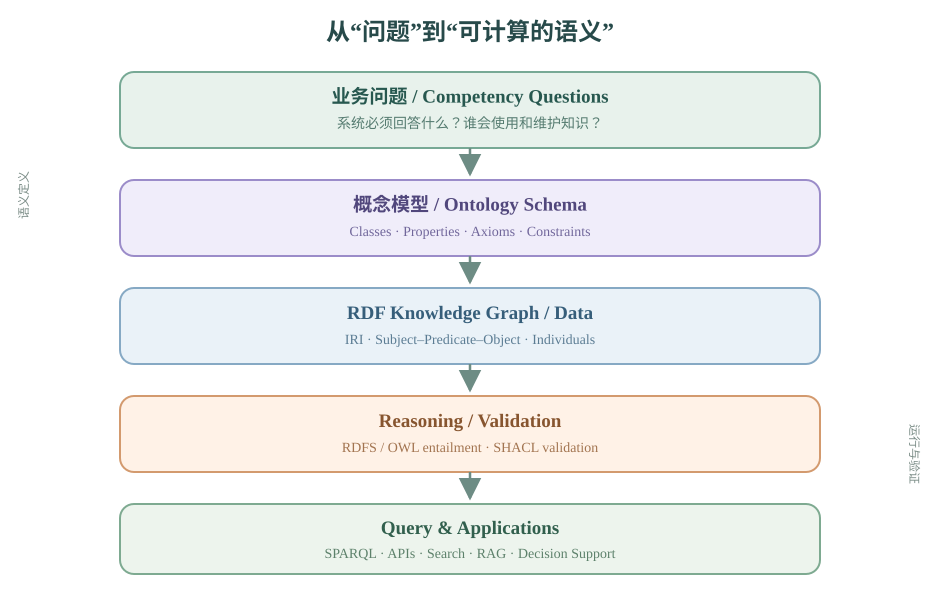
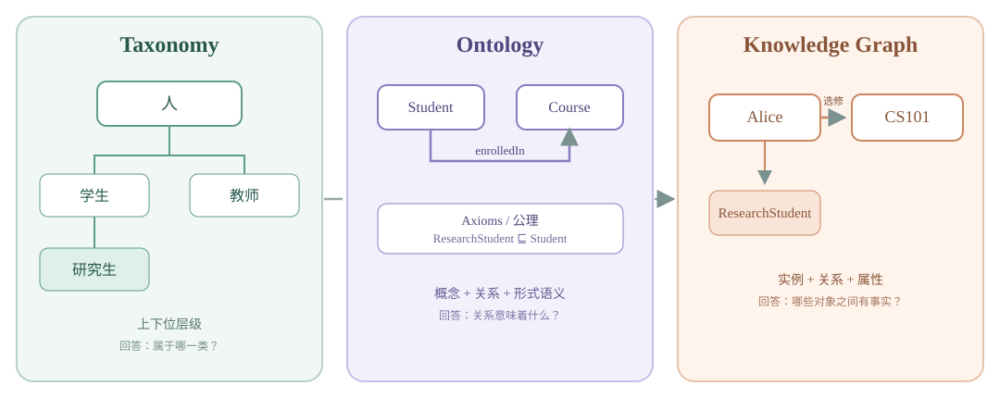
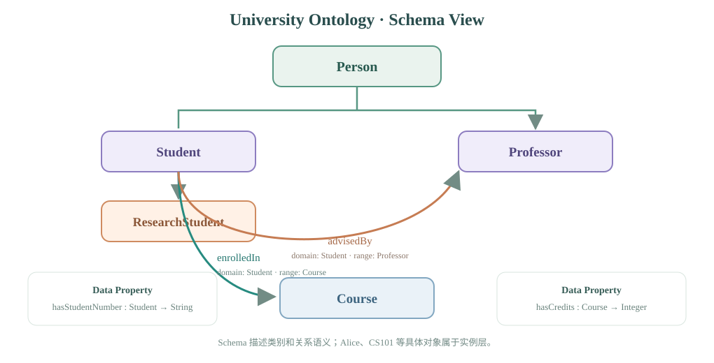
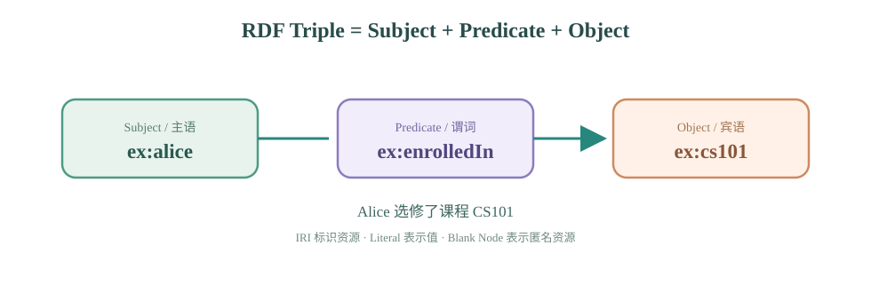
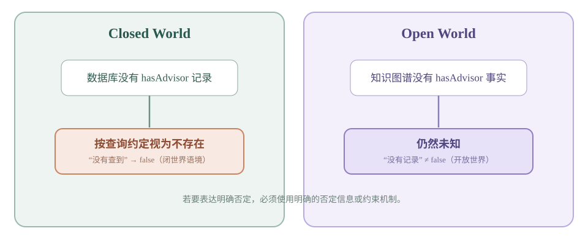
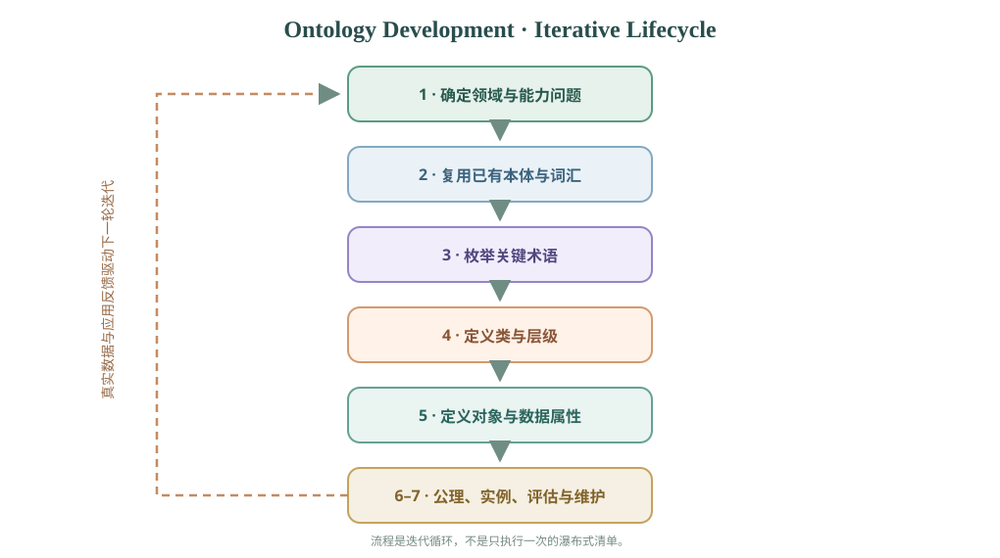
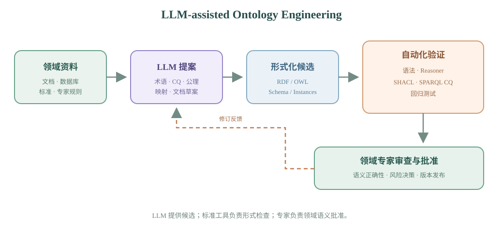

KNOWLEDGE REPRESENTATION · ONTOLOGY ENGINEERING
Ontology Engineering：从分类树到可推理的知识模型
把概念、关系、约束与实例组织成一个机器可以理解的语义系统。理解本体，不只是学会画一张知识图谱，而是学会明确地描述“什么是什么、什么与什么有关，以及哪些结论可以从已知事实中推出”。
01 · 为什么需要 Ontology？先看一个真实的软件问题
假设一所大学有三个系统：教务系统记录“学生选课”，科研系统记录“研究生参与项目”，图书馆系统记录“读者借阅”。每个系统都有自己的字段、命名习惯和数据库结构。
教务系统中的 student_id、科研系统中的 researcher、图书馆系统中的 reader，可能指向同一个人，也可能代表不同角色。一个系统说“研究生”，另一个系统说“硕士生”，第三个系统只存储“学籍类型 = 2”。如果仅把这些数据拼接起来，系统仍然不知道它们在语义上是否等价。
问题至少包含四层：术语不同、概念边界不清、关系定义不一致、隐含知识无法被机器可靠使用。 本体工程的目标，就是把这些原本依赖人类默契的假设显式化。

Stanford 的 Noy 与 McGuinness 将本体视为领域术语及其关系的显式、形式化规范。它的价值不只是统一名词，还包括知识复用、显式表达领域假设，以及让软件能够在同一套语义上协作。[1]
本文中的 Ontology 指计算机科学中的“本体 / 本体工程”，即用于知识表示的计算模型，而不是讨论哲学意义上“存在是什么”的形而上学本体论。
02 · Taxonomy、Ontology、Knowledge Graph：五个概念不要混为一谈
先把边界讲清楚，后面的标准才容易理解。它们并不是互相排斥的五种产品，而是解决不同层次问题的工具。
| 概念 | 核心问题 | 典型结构 | 擅长什么 |
|---|---|---|---|
| Taxonomy 分类体系 | 某个概念属于哪个上位类别？ | 树或层级图 | 目录、主题导航、层级归类 |
| Thesaurus / SKOS 叙词表与概念体系 | 概念有哪些首选词、别名和相关概念？ | 概念 + broader / narrower / related | 主题标引、术语管理、跨语言概念映射 |
| Ontology 本体 | 概念、属性和关系具有怎样的形式语义？ | 类、属性、实例、公理与限制 | 语义互操作、分类推理、一致性分析 |
| Knowledge Graph 知识图谱 | 具体实体之间有哪些事实关系？ | 实体节点 + 关系边 + 属性 | 多跳查询、实体关联、知识整合 |
| Embedding Space 向量表示空间 | 哪些对象在学习到的表示空间中相似？ | 向量 + 距离或相似度 | 语义检索、近邻召回、聚类 |

2.1 Taxonomy：只回答“属于哪一类”
例如：研究生 → 学生 → 人。它表达的是层级归属。若一个节点属于“研究生”，就应该属于它的上位类别“学生”。但单独的树无法充分表达“学生选修课程”“导师指导学生”“课程由教师开设”等横向关系。
2.2 Ontology：回答“概念如何定义、关系意味着什么”
除了层级，本体还需要定义对象属性（例如 enrolledIn）、数据属性（例如 hasCredits），以及逻辑公理（例如“研究生是一类学生”）。这些定义可以由推理器解释，而不是仅供人阅读。
2.3 Knowledge Graph：把抽象定义落到具体事实
本体描述“学生”“课程”是什么，以及 enrolledIn 的语义；知识图谱记录“Alice 选修了 CS101”这样的事实。很多知识图谱会复用一个本体作为 Schema，但不是每个知识图谱都具有丰富、形式化的本体。
2.4 Embedding：相似不等于逻辑蕴含
向量模型可能认为“研究生”和“学生”在语义空间中很接近，但相似度并不能证明子类关系。反过来，本体中的 ResearchStudent ⊑ Student 是明确的逻辑约束，不依赖训练语料中的距离。
一个重要区分：“两个概念很相似”是统计判断；“A 是 B 的子类”是语义承诺。不能仅凭向量相似度，把后者自动写入本体。
03 · 把 Ontology 形式化：类、属性、实例与公理
本体可以看成一组关于某个领域的精确描述。它的关键不在于“节点数量”，而在于每一个符号和关系都有可解释的语义。OWL 2 将本体中的基本知识组织为实体、表达式和公理。[3]
3.1 四类基本构件
Class（类）：描述一组对象，例如 Person、Student、Course。
Individual（个体 / 实例）：领域中的具体对象，例如 alice、cs101。
Object Property（对象属性）：连接两个个体，例如 enrolledIn(alice, cs101)。
Data Property（数据属性）：把个体连接到字面值，例如 hasCredits(cs101, 3)。
Axiom（公理）：声明类、属性或个体之间必须满足的逻辑关系，例如子类、等价类、不相交类、属性限制。

3.2 子类不是“看起来像”，而是集合包含
设解释结构为 (I)，它把类映射为论域中的对象集合。若每一个研究生都是学生，那么：
同理，若每个学生都是人：
于是通过传递性，可以推出 ResearchStudent ⊑ Person。这里的关键是：本体不需要为每一个研究生重复写一条“他是人”的事实，只需要声明正确的类层级，推理器就能计算蕴含关系。
3.3 属性也有语义
若 enrolledIn 表示“选修课程”，我们可以规定其定义域为 Student、值域为 Course。它的直观含义是：一旦存在一条 x enrolledIn y 的事实，RDFS/OWL 语义就允许推断 x 属于 Student、y 属于 Course。
3.4 更强的表达：等价类与存在限制
例如，若我们把“研究生”定义为“至少存在一位导师的学生”，可以用描述逻辑风格的表达式表示：
这条定义比“GraduateStudent 是 Student 的子类”更强：它说明满足条件的学生属于研究生，同时也可能让推理器根据关系事实识别出新的研究生实例。
04 · RDF 与 RDFS：让知识变成可交换的图数据
理解本体技术，先从 RDF 开始。W3C RDF 1.1 的核心数据模型是三元组：主语（Subject）、谓词（Predicate）、宾语（Object）。一个 RDF 图就是一组这样的三元组。[2]

4.1 用三元组表示大学知识
@prefix ex: <https://example.org/university#> .
@prefix rdf: <http://www.w3.org/1999/02/22-rdf-syntax-ns#> .
@prefix rdfs: <http://www.w3.org/2000/01/rdf-schema#> .
ex:ResearchStudent rdfs:subClassOf ex:Student .
ex:Student rdfs:subClassOf ex:Person .
ex:enrolledIn rdfs:domain ex:Student ;
rdfs:range ex:Course .
ex:alice rdf:type ex:ResearchStudent ;
ex:enrolledIn ex:cs101 .读这段 Turtle 时，可以把每一行理解为一条事实。比如 ex:alice rdf:type ex:ResearchStudent 表示 Alice 是研究生；ex:enrolledIn 则连接 Alice 和课程 CS101。IRI 用于标识资源，字面值用于表示字符串、数字、日期等数据。
4.2 RDFS 为什么不只是“给边起名字”？
RDFS 提供 rdfs:subClassOf、rdfs:domain、rdfs:range 等基础词汇。它们有明确语义，可以支持类型传播和关系推导：
- 已知
ResearchStudent ⊑ Student，且 Alice 是 ResearchStudent，可推出 Alice 是 Student。 - 已知
Student ⊑ Person，可进一步推出 Alice 是 Person。 - 已知
enrolledIn的 domain 是 Student，Alice 参与该关系，可推出 Alice 是 Student。 - 已知
enrolledIn的 range 是 Course，Alice 选修 CS101，可推出 CS101 是 Course。
这就是从显式事实到隐含事实的过程。它不是模型凭经验猜测，而是按照已声明的语义规则进行推导。
工程陷阱：domain / range 不是数据库里的字段校验。 如果误把 hasAuthor 的 domain 设为 Person，而某个资源错误地使用了该属性，推理器会推断该资源是 Person；它不会自动替你报告“数据类型填错了”。数据验证要结合 SHACL 等约束语言。
4.3 SPARQL：从图中提出问题
SPARQL 是面向 RDF 图的查询语言。它通过图模式匹配返回符合条件的绑定结果。[5]
PREFIX ex: <https://example.org/university#>
PREFIX rdf: <http://www.w3.org/1999/02/22-rdf-syntax-ns#>
SELECT ?student ?course
WHERE {
?student rdf:type ex:Student ;
ex:enrolledIn ?course .
}如果存储层已经物化了推理结果，或查询引擎支持相应的 entailment regime，那么 ResearchStudent 的实例也能出现在 Student 的查询结果中。如果没有启用推理，普通 RDF 图模式匹配通常只会匹配图中实际存在的类型声明。查询语法本身不会自动替你补齐所有逻辑结论。
05 · OWL：从基础分类走向形式逻辑与推理
RDFS 适合表达基础的类层级、定义域和值域；OWL 2 则提供更丰富的形式化建模能力，例如类等价、不相交类、属性特征、存在 / 全称限制、基数限制和属性链。OWL 2 的语义由标准明确规定，推理器负责计算相应结论。[3]
5.1 一些常用公理
| 公理类型 | 直观含义 | 大学示例 |
|---|---|---|
| SubClassOf | 所有 A 都是 B | ResearchStudent ⊑ Student |
| EquivalentClasses | A 与 B 定义为同一类对象集合 | GraduateStudent ≡ Student ⊓ 有导师的对象 |
| DisjointClasses | 两个类不能共享实例 | Course 与 Person 不相交 |
| ObjectPropertyDomain / Range | 关系主体 / 客体具有的类型 | enrolledIn 的主体是 Student |
| ObjectSomeValuesFrom | 至少存在一个满足条件的关系对象 | 至少有一位 Professor 导师 |
| Cardinality | 限制关系对象数量 | 某种关系恰好有一位负责人 |
5.2 开放世界假设（Open World Assumption）
这是从关系数据库迁移到 OWL 时最容易踩的坑之一。数据库应用通常采用闭世界假设（Closed World Assumption）：查询没有返回某个事实，应用就可能把它视为不存在。OWL 默认采用开放世界假设：一个事实没有被写出来，只能说明当前知识库不知道它，不能直接断言它是假的。

例如：知识库没有记录 Alice 的导师。你不能据此推出 Alice 没有导师。她可能确实没有，也可能只是数据还未导入。若要表达明确的否定，需要使用相应的否定断言或其他明确建模机制。
开放世界 ≠ 什么都能推断。它意味着缺失信息不自动等于否定；推理仍然受已声明公理和形式语义约束。
5.3 没有默认的“不同名字必然是不同个体”
OWL 不要求采用 Unique Name Assumption。ex:alice 和 ex:alice_2024 即使是两个不同 IRI，也不自动意味着它们指向两个不同现实对象。跨系统整合时，系统可能需要用 owl:sameAs 表示同一对象，或用 owl:differentFrom 明确区分。
5.4 OWL 2 Profiles：表达能力与计算成本之间的权衡
完整的逻辑表达能力不等于工程上总是最合适。W3C 定义了 OWL 2 EL、QL、RL 等 Profile，针对不同的规模和计算方式做了取舍。[3]
| Profile | 典型适用场景 | 设计重点 |
|---|---|---|
| OWL 2 EL | 大型、生物医学或结构化领域本体 | 高效处理丰富的类表达和分类 |
| OWL 2 QL | 关系数据库之上的概念查询和数据集成 | 把查询重写为关系查询，尽量不搬动原始数据 |
| OWL 2 RL | 已有 RDF 图、希望通过规则进行扩展的系统 | 便于采用规则技术实现可扩展推理 |
选型应从问题规模、查询形态、推理能力、存储方式和可用工具出发，而不是一开始就选择表达能力最强的语言。
06 · SKOS、SPARQL 与 SHACL：概念组织、查询和验证各司其职
6.1 SKOS：当你主要需要“概念管理”时，不必强行上完整 OWL
SKOS（Simple Knowledge Organization System）是 W3C 为分类体系、叙词表、主题词表等知识组织系统定义的轻量数据模型。它允许概念拥有 URI、多语言标签、首选词、别名、定义、上下位关系和关联关系，并可与 OWL 组合使用。[4]
@prefix skos: <http://www.w3.org/2004/02/skos/core#> .
@prefix ex: <https://example.org/concepts#> .
ex:graduateStudent a skos:Concept ;
skos:prefLabel "研究生"@zh ;
skos:altLabel "研究生学员"@zh ;
skos:broader ex:student .
ex:student a skos:Concept ;
skos:prefLabel "学生"@zh .
ex:course a skos:Concept ;
skos:prefLabel "课程"@zh ;
skos:related ex:student .注意 SKOS 的 skos:broader 和 skos:narrower 按约定表达直接的层级关系；用于表达直接或间接祖先关系的传递闭包，则由 skos:broaderTransitive 等词汇承载。不能把 SKOS 的概念上下位关系不加区分地等同于 OWL 的类包含公理。[4]
6.2 三个常被混淆的工程角色
| 技术 | 主要任务 | 典型问题 |
|---|---|---|
| SPARQL | 查询 RDF 图 | 哪些学生选修了哪些课程？ |
| OWL Reasoner | 根据公理计算蕴含、分类和一致性 | 哪些实例可以被推断为研究生？ |
| SHACL | 验证 RDF 数据是否符合声明的结构和约束 | 每个 Student 是否至少有一个学籍编号？ |
SHACL 将形状图（shapes graph）与数据图（data graph）分开，验证器会生成报告，说明哪些节点违反了哪些约束。它解决的是数据符合性检查，不应与 OWL 的逻辑开放世界推理混为一谈。[6]
@prefix sh: <http://www.w3.org/ns/shacl#> .
@prefix ex: <https://example.org/university#> .
ex:StudentShape a sh:NodeShape ;
sh:targetClass ex:Student ;
sh:property [
sh:path ex:studentNumber ;
sh:minCount 1 ;
sh:datatype xsd:string
] .这条 SHACL 规则表达：对每个目标 Student 节点，studentNumber 至少出现一次，并且值的数据类型为字符串。它是验证约束，不意味着 OWL 可以因为缺少字段就自动认定该对象不是 Student。
07 · 本体工程生命周期：从问题到可维护的模型
本体不是一次性画出来的图，而是一个需要迭代、验证和维护的软件工程资产。Noy 与 McGuinness 的经典指南强调：不存在唯一正确的本体；建模方案应由应用目标决定，并通过反复使用和专家反馈修订。[1]

7.1 从 Competency Questions 开始
Competency Questions（能力问题，简称 CQ）是一组系统必须能够回答的问题。它们帮助确定本体的范围和细节，并在后期作为验收标准。[1]
大学领域的能力问题示例
- 哪些研究生选修了课程 CS101？
- 哪些教师指导了至少一名研究生？
- 某门课程属于哪个学院？
- 一个研究生是否至少有一位导师？
- 哪些学生同时参与了某个科研项目？
每个问题都暗含所需的知识结构。例如，第 1 题需要 Student、Course、enrolledIn；第 2 题需要 Professor、ResearchStudent、advisedBy；第 4 题则涉及存在性或基数约束，以及如何验证数据完整性。
7.2 七个可执行步骤
- 确定领域与范围。 写清楚服务对象、应用目的、维护者，以及本体不打算覆盖的内容。
- 考虑复用已有本体。 先检查领域标准、公共词汇和已有模型，避免为同一概念重复造词。
- 枚举重要术语。 收集名词、动词、同义词、缩写和易混淆概念。
- 定义类与层级。 判断哪些术语是类别，哪些只是实例或属性值；再设计上位和下位关系。
- 定义属性。 区分对象属性与数据属性，明确 domain、range、方向和命名。
- 定义约束与公理。 添加等价类、不相交类、存在限制、基数限制等必要语义。
- 创建实例并验证。 用真实或代表性数据测试能力问题、逻辑一致性和查询结果。
NeOn 方法论进一步强调：大型本体常常是本体网络，需要复用已有知识资源、非本体资源和 Ontology Design Patterns，而不只是从零开始。[7]
08 · 如何评价一个 Ontology？不是节点越多越好
本体质量必须围绕它要解决的问题来衡量。一个拥有数万个类、数十万条边的模型，如果无法回答核心问题，或者把概念定义得互相矛盾，仍然是失败的工程资产。
| 评价维度 | 检查问题 | 可执行手段 |
|---|---|---|
| Coverage | 关键概念、属性和 CQ 是否被覆盖？ | CQ 覆盖矩阵、领域专家审查 |
| Consistency | 是否存在不可满足类或逻辑冲突？ | OWL Reasoner、一致性测试 |
| Competency | 模型是否能回答预先定义的问题？ | SPARQL 查询回归测试 |
| Data Conformance | 实例数据是否满足结构要求？ | SHACL 验证报告 |
| Interoperability | 是否复用了稳定 URI 和公共词汇？ | 映射审查、跨系统集成测试 |
| Maintainability | 新增概念是否会破坏既有语义？ | 版本管理、差异审查、回归测试 |
| Performance | 推理与查询能否在业务预算内完成？ | 分类耗时、查询延迟、内存监控 |
8.1 常见建模错误
- 把每个名词都建成类。 “姓名”“年龄”通常更适合数据属性，而不是类。
- 把角色和实体混淆。 同一个人可能同时是学生、教师和项目负责人，不能随意把这些身份拆成互斥实体。
- 把同义词当作同一实体。 词语相似不代表指向同一个现实对象；应区分标签、概念和个体身份。
- 过度使用等价类。 等价类是双向语义承诺，不能只因两个名称在某些场景下接近就宣布它们等价。
- 把 OWL 当成数据库约束语言。 如果业务要求“每条记录必须有编号”，应明确使用 SHACL 或数据库约束，而不是依赖开放世界语义。
- 忽略时间和版本。 现实中的组织结构、课程归属、法规和术语会变化；本体需要版本、来源和生效时间管理。
09 · LLM 如何参与 Ontology Engineering？从自动生成走向人机协同
大模型能够阅读文档、归纳术语、生成候选类和关系、提出 Competency Questions、编写 Turtle / OWL 片段、生成映射建议，甚至辅助撰写本体文档。但“能生成一个看起来合理的 OWL 文件”不等于“生成了一个正确的本体”。

9.1 2026 年系统性综述提供了什么信号？
Li、Garijo 与 Poveda-Villalón 于 2026 年发表的系统性综述分析了 36 篇论文、49 项任务级研究，覆盖本体需求定义、实现、发布和维护。其统计中，31 项任务（63.3%）集中在实现阶段，12 项（24.5%）涉及需求定义，5 项（10.2%）涉及发布，只有 1 项（2.0%）涉及维护。[8]
这意味着当前研究更多聚焦于“如何生成或修改本体”，而对长期维护、标准化评估和可重复性仍有明显不足。综述也指出，不同研究的任务定义、数据集、评价指标和实验流程尚未充分统一，部分工作没有公开完整评估协议或代码。
9.2 推荐的人机协同流水线
- 文档理解： 从论文、标准、业务规则和数据库字段中抽取术语及候选关系。
- 需求生成： 让 LLM 起草能力问题、术语表和概念边界，并由领域专家修订。
- 本体草案： 生成类层级、对象属性、数据属性和初步公理。
- 形式验证： 检查 RDF / OWL 语法，运行推理器检查一致性与可满足性。
- 数据验证： 使用 SHACL 检查实例图是否满足数据结构要求。
- 问题回归： 把 CQ 转换为 SPARQL 测试，比较答案是否符合预期。
- 专家批准： 对高风险语义决策、跨本体映射和实体合并进行人工审查。
- 版本发布： 记录变更、来源、版本、弃用概念和迁移路径。
核心原则：LLM 是候选知识生成器，不是领域真理的裁判。形式推理能发现逻辑问题，但不能替代领域专家判断一个概念是否定义正确；专家也不能替代自动化回归测试。
10 · 交互式实验：从显式事实到推导结果
下面用同一个大学例子观察推理前后的差异。初始数据只写入六条事实：Alice 是 ResearchStudent、ResearchStudent 是 Student、Student 是 Person、Alice 选修 CS101，以及 enrolledIn 的 domain 和 range 声明。
RDFS 风格的正向推理
选择一个状态，观察推理器如何根据子类、domain 和 range 规则扩展事实集合。
Alice rdf:type ResearchStudent
ResearchStudent rdfs:subClassOf Student
Student rdfs:subClassOf Person
Alice enrolledIn CS101
enrolledIn rdfs:domain Student
enrolledIn rdfs:range Course
教学模型只实现了正向的 subClassOf、domain、range 三类规则，不是完整 RDFS 实现，更不是 OWL 2 推理器。正式系统必须使用符合目标语义标准的工具。
10.1 这个例子实际推导了什么？
- 由
Alice rdf:type ResearchStudent和子类公理，推出 Alice 是 Student。 - 再由 Student 是 Person 的子类，推出 Alice 是 Person。
- 由
Alice enrolledIn CS101与 domain，推出 Alice 是 Student。 - 由同一关系与 range，推出 CS101 是 Course。
注意，推理结果是原始事实集合的扩展。推理器没有删除 Alice 的原始类型，也没有因为“缺少某条边”就推断其否定。
11 · 实际系统如何选型？从最小语义开始
不要为了使用 Ontology 而使用 Ontology。一个工程团队可以按需要逐级增加语义能力：
| 你的真实需求 | 优先考虑 | 什么时候升级 |
|---|---|---|
| 只需要目录和上下位分类 | Taxonomy / SKOS | 出现大量横向关系、跨体系映射或机器可读查询 |
| 需要统一实体、关系和数据交换 | RDF + RDFS | 出现复杂等价、限制、互斥和分类推理需求 |
| 需要显式逻辑语义与推理 | OWL 2 + Reasoner | 需要按业务数据形状进行强约束验证时 |
| 需要验证实例数据的结构 | SHACL | 规则复杂、需要查询和自动化业务处理时 |
| 需要实体关系查询与应用 | RDF Store / Knowledge Graph | 根据图模型、性能和团队生态评估存储实现 |
| 需要语义召回与模糊匹配 | Embedding / Vector Search | 需要可解释的关系和确定性规则时，与知识图谱结合 |
11.1 与 RAG 结合时，Ontology 的位置在哪里？
在 RAG 系统中，向量检索适合找出语义相似的文本片段；本体与知识图谱适合表达明确的实体类型、关系和约束。两者可以互补：先用向量检索召回候选证据，再利用实体链接、图查询和本体规则补充结构化上下文。
但本体并不能自动保证来源事实真实。知识图谱仍需要 provenance（来源）、时间、置信度和数据治理；LLM 也不能因为看到一条逻辑上可推出的关系，就把它当作已经被原始资料直接陈述的事实。
11.2 推荐的工程检查清单
- 每个核心概念都有唯一、稳定的标识符和定义。
- 类、实例、对象属性、数据属性没有混用。
- domain / range 与子类关系经过领域专家审查。
- 每条关键公理都有设计理由和可测试的能力问题。
- 推理器报告的一致性与可满足性结果被纳入 CI。
- SHACL 验证数据完整性，SPARQL 回归测试业务问题。
- 版本、来源、弃用映射和跨系统对齐均可追踪。
12 · 参考资料与进一步阅读
- Natalya F. Noy and Deborah L. McGuinness. Ontology Development 101: A Guide to Creating Your First Ontology. Stanford Knowledge Systems Laboratory, 2001. Stanford 原文。
- W3C. RDF 1.1 Concepts and Abstract Syntax. W3C Recommendation, 2014. 标准文档。
- W3C. OWL 2 Web Ontology Language Primer (Second Edition). W3C Recommendation, 2012. 标准文档。
- W3C. SKOS Simple Knowledge Organization System Reference. W3C Recommendation, 2009. 标准文档。
- W3C. SPARQL 1.1 Query Language. W3C Recommendation, 2013. 标准文档。
- W3C. Shapes Constraint Language (SHACL). W3C Recommendation, 2017. 标准文档。
- Mari Carmen Suárez-Figueroa, Asunción Gómez-Pérez, and Mariano Fernández-López. The NeOn Methodology framework: A scenario-based methodology for ontology development. Applied Ontology, 10(2), 2015. DOI。
- Jiayi Li, Daniel Garijo, and María Poveda-Villalón. Large Language Models for Ontology Engineering: A Systematic Literature Review. Semantic Web, first published online 13 July 2026. DOI。
理解 Ontology 的关键，不是记住更多 RDF 或 OWL 术语，而是建立一个稳定的思考顺序：先问系统需要回答什么，再定义概念和关系，随后明确逻辑语义，最后用真实数据、查询、推理和验证反复检验模型。